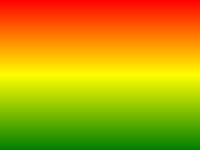
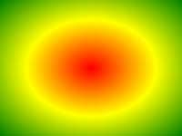

CSS3 gradients let you display smooth transitions between two or more specified colors.
Earlier, you had to use image for these effects. However, by using CSS3 gradients you can reduce download time and bandwidth usage. In addition, elements with gradients look better when zoomed, because the gradient is generated by the browser.
CSS3 defines two types of gradients:
To create a linear gradient you must define at least two color stops. Color stops are the colors you want to render smooth transitions among. You can also set a starting point and a direction (or an angle) along with the gradient effect.
Example of Linear Gradient:
Syntax
background: linear-gradient(direction, color-stop1, color-stop3, ...);
Linear Gradient - Top to Bottom (this is default)
The following example shows a linear gradient that starts at the top. It starts red, transitioning to blue:
ExampleLinear Gradient - Left to Right
The following example shows a linear gradient that starts from the left. It starts red, transitioning to blue:
ExampleLinear Gradient - Diagonal
You can make a gradient diagonally by specifying both the horizontal and vertical starting positions.
The following example shows a linear gradient that starts at top left(and goes to bottom right). It starts red, transitioning to blue:
ExampleIf you want more control over the direction of the gradient, you can define an angle, instead of the predefined directions (to bottom, to top, to right, to left, to bottom right, etc.).
Syntax
background: linear-gradient(angle, color-stop1, color-stop2);
The angle is specified as an angle between a horizontal line and the gradient line, going counter-clockwise. In other words, 0deg creates a bottom to top gradient, while 90deg generates a left to right gradient.
The following example shows how to use angles on linear gradients:
ExampleThe following examples shows how to set multiple color stops:
ExampleThe following example shows how to create a linear gradient with the color of the rainbow and some text:
ExampleCSS3 gradients also support transparency, which can be used to create fading effects.
To add transparency, we use the rgba() function to define the color stops. The last parameter in the rgba() function can be a value from 0 to 1, and it defines the transparency of the color: 0 indicates full transparency, 1 indicates full color (not transparency).
The following example shows a linear gradient that starts from the left. It starts fully transparent, transitioning to full color red:
ExampleThe repeating-linear-gradient() function is used to repeat linear gradients:
ExampleA radial gradient is defined its center.
To create a radial gradient you must also define at least two color stops.
Example of Radial Gradient:
Syntax
background: radial-gradient(shape size at position, start-color, ..., last-color);
By default, shape is ellipse, size is farthest-corner, and position is center.
Radial Gradient - Evenly Spaced Color Stops (this is default) Example
Radial Gradient - Different Spaced Color Stops
ExampleThe shape parameter defines the shape. It can take the value circle or ellipse. The default value is ellipse.
ExampleThe size parameter defines the size of the gradient. It can take four values:
The repeating-radial-gradient() function is used to repeat radial gradients:
Example